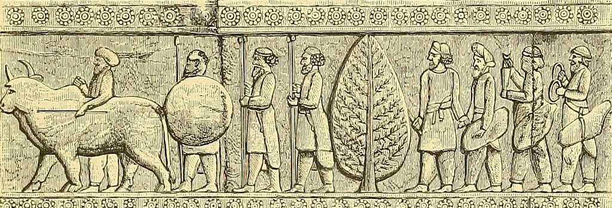
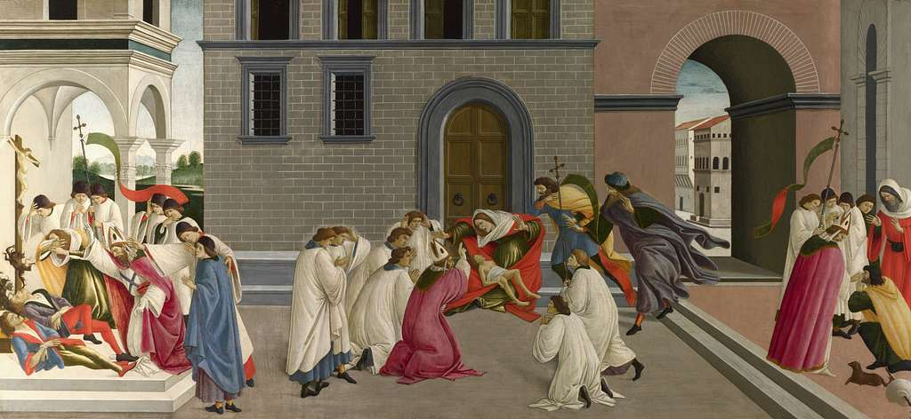
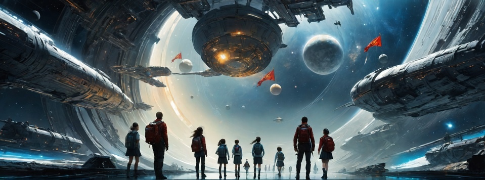
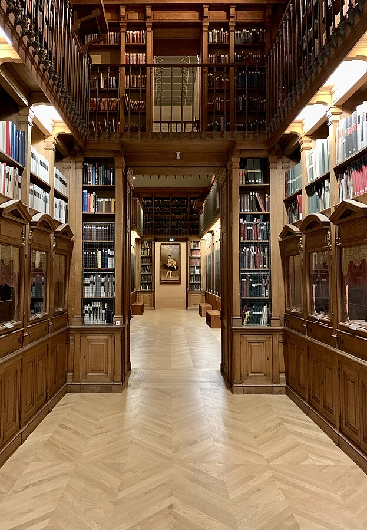

The Museum of History is a place dedicated to preserving and showcasing the rich history of our world. Founded in 1950, our mission is to educate and inspire visitors about the past.
|
 Exhibit 1: Ancient Civilizations |
||
|---|---|---|
| Explore the fascinating artifacts and relics from ancient civilizations, including pottery, tools, and sculptures. Gain insights into the daily life and cultural practices of these remarkable societies. | Discover the architectural marvels and advancements in art from the ancient world. From the Pyramids of Egypt to the Acropolis in Greece, this exhibit showcases the ingenuity of human civilization. | Uncover the mysteries of ancient rituals and beliefs. From religious ceremonies to burial practices, delve into the spiritual aspects that shaped the identity of ancient cultures. |
|
 Exhibit 2: The Renaissance Era |
||
| Immerse yourself in the vibrant world of the Renaissance. Witness the explosion of creativity in art, science, and literature. Experience the works of Michelangelo, Leonardo da Vinci, and other iconic figures. | Journey through a time of rebirth and transformation. Explore the societal changes, technological innovations, and the birth of the printing press that defined the Renaissance era. | Gain insights into the intellectual revolution that shaped modern thinking. From humanism to the scientific method, this exhibit highlights the Renaissance's profound impact on the course of history. |
|
 Exhibit 3: Space Exploration |
||
| Embark on a cosmic journey through the history of space exploration. Witness the achievements of pioneers like Yuri Gagarin and Neil Armstrong, who ventured beyond our planet. | Explore the technological advancements that propelled humanity into space. From early rockets to the International Space Station, this exhibit showcases the evolution of space travel. | Experience the awe-inspiring beauty of the cosmos. View stunning images captured by telescopes and spacecraft, and learn about ongoing missions that continue to expand our understanding of the universe. |

Visit the Official Website